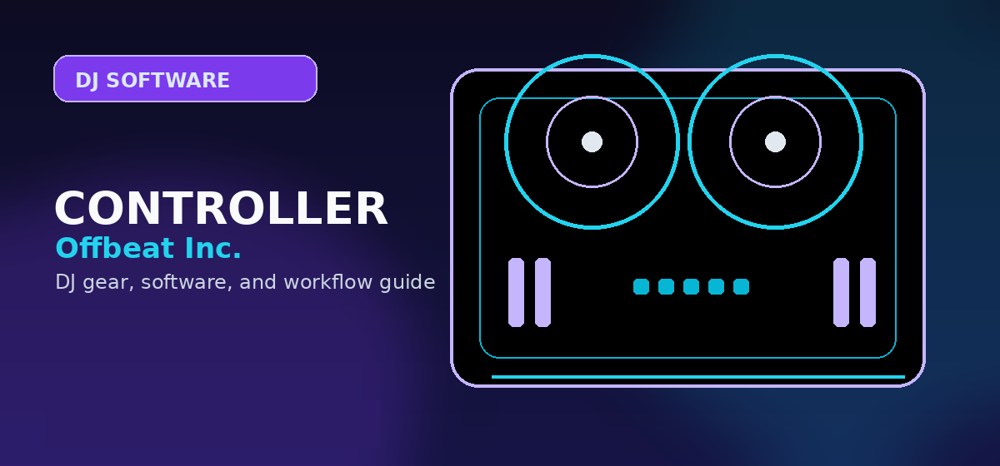

Numark Scratch Review: Two-Channel Serato DVS Mixer
What the Scratch actually does, what equipment you still need, and how Serato DJ Pro and DVS are unlocked.

Disclosure: This page contains affiliate links. We may earn a commission at no extra cost to you. Full disclosure.
First, the essential distinction: the Numark Scratch is a two-channel DJ mixer, not an all-in-one DJ controller. It has no built-in jog wheels, spinning platters, or decks for manipulating tracks on its own. To scratch with physical records, you must connect compatible turntables and use appropriate records; you can also use compatible media players. A computer running Serato DJ Pro is needed for its software/DVS workflow.
That distinction changes both the purchase decision and the total cost. If you want one device with platters that connects to your laptop, compare DJ controllers instead. If you already own decks—or are deliberately assembling a timecode-vinyl setup—the Scratch offers an integrated Serato-compatible mixer with a purpose-built crossfader and performance controls.
What you actually get
- Two mixer channels: phono/line connections for external sources, channel controls, crossfader and filtering.
- Innofader scratch crossfader: with reverse and slope controls.
- Eight performance pads total: four per deck side for hot cues, rolls and samples, with modes controlled through Serato.
- Six software-effects selections: with dual paddle triggers, along with loop controls.
- Built-in USB audio interface: for connecting the mixer to a computer with compatible software.
- Audio connections: XLR main outputs, unbalanced booth output, phono/line inputs, microphone input and both 1/4-inch and 1/8-inch headphone connections.
These features are documented by Numark's product specifications and Serato's hardware listing. Check the current manual and system requirements before purchasing, especially for older operating systems.
Serato DJ Pro and DVS: licensing facts
The Numark Scratch is Serato DJ Pro hardware-unlocked. With the mixer connected to compatible software, it unlocks Serato DJ Pro without a separate Pro license purchase. It also unlocks Serato DVS functionality. It is not a Serato DJ Lite controller and does not require a paid Pro upgrade just to use the included software features.
Numark explicitly lists Scratch in its Pro-enabled devices, and Serato independently confirms both the Pro and DVS unlocks: Numark licensing reference; Serato hardware support.
Important: a DVS unlock is not a complete vinyl setup. Serato control vinyl or control CDs and the external turntables or media players are separate hardware/media requirements. Check the appropriate input selection, computer support, and currently available drivers before assuming plug-and-play compatibility.
What else is needed to start scratching?
| Your starting point | What it means |
|---|---|
| Already own compatible turntables or media players | The Scratch may fit as your mixer and USB/Serato interface. Verify cabling, DVS media, drivers and software support. |
| Own a laptop but no decks | The mixer does not provide jog wheels; budget for external decks and related accessories, or choose a controller instead. |
| Want to play ordinary vinyl without a laptop | The mixer accepts analog phono/line sources; Serato-specific pads/effects need their software workflow. Verify source and speaker connections. |
| Want a single portable all-in-one unit | Consider a controller with built-in platters and outputs rather than buying this mixer in isolation. |
Total-cost check: budget for external decks, compatible cables, headphones, speakers/PA, laptop, and DVS control records where applicable. We intentionally do not quote a fixed 2026 retail price or imply that the mixer alone replaces an entire DJ setup.
Setup basics and practical limitations
- Connect your external decks to the appropriate phono or line inputs. Select the correct source on each mixer channel.
- Install a current compatible Serato DJ Pro version and any Numark driver required for your specific operating system.
- Connect the mixer via USB and confirm that Serato recognizes its hardware unlock.
- If using DVS, supply compatible control vinyl/CD media, choose the correct deck/input modes and calibrate the DVS signal using Serato's guidance.
- Test cueing on headphones and the main output at low volume before bringing up your speakers or PA system.
The Scratch uses an internal power supply and has physical XLR main outputs, but the booth outputs are unbalanced. Do not assume that an adapter alone converts an unbalanced signal into a balanced connection or guarantees noise-free operation. Consult the manufacturer's manual and downloads for your configuration.
Who should buy the Numark Scratch?
Good fit: turntablists assembling an affordable two-channel scratch setup, DJs who already own external decks, and Serato DJ Pro/DVS users who want a hardware-unlocked mixer with an Innofader and cue/effects controls.
Wrong fit: a beginner expecting a complete two-deck controller, someone who needs four independent physical mixer channels, or a buyer who cannot accommodate external decks and DVS media. For an all-in-one first purchase, see our beginner-controller guide.
Bottom line: judge Scratch against other two-channel DVS mixers, not against controllers as though they were interchangeable. Our conclusion is based on the published specifications and documented software unlocks, not a claim that Offbeat physically tested this unit.
Before you buy
Review Numark's official photos, connections, downloads and manuals and Serato's supported-hardware listing. Confirm compatibility for your computer and existing decks, then compare current retailer prices.
Search for Numark Scratch DJ mixers on Amazon (affiliate). Always check the listing's exact model: Numark Scratch mixer is not the PT01 Scratch portable turntable or another Numark controller.
Frequently asked questions
Does the Numark Scratch have jog wheels or platters?
No. It is a two-channel DJ mixer. Scratching with records or timecode requires external turntables or compatible media players and the appropriate setup.
Does Numark Scratch unlock Serato DJ Pro and DVS?
Yes. Numark and Serato list the Scratch as hardware-unlocking Serato DJ Pro and DVS when connected to compatible software. Control vinyl/CD media and external decks are separate.
Is this better than a beginner DJ controller?
That depends on the setup. The Scratch is designed for external decks and scratch/DVS mixing; a controller includes built-in deck controls and is generally a simpler first purchase if you do not already have turntables or media players.